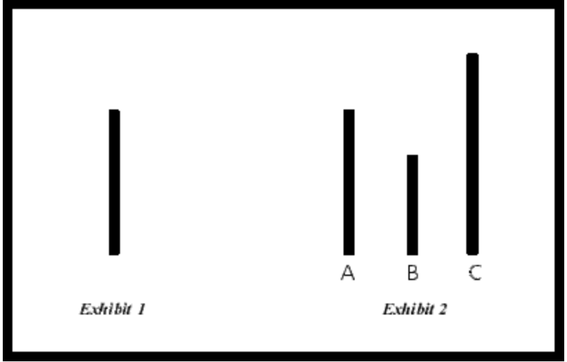
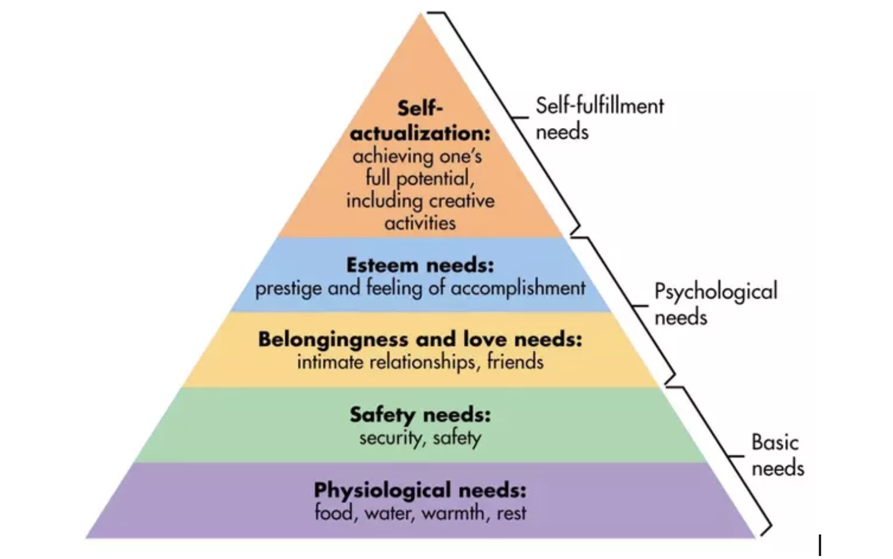

Introduction:
Conformity is when an individual displays a particular behavior because it is the behavior that the individual sees most frequently in others. Another explanation I preferred is “ A change in behavior due to the real or imagined influence of other people.”[1]Conformity is usually motivated by an individual's identification with a specific group. At first, the group behaviors may differ from their own personal values. However, as time goes by, as the group's views and actions become entrenched, the individual's underlying beliefs and attitudes may begin to change. This research paper will discuss how conformity works in the individual and groups and the nature of conformity.
Primary research-interview:
Influenced by my personal experience with the groups, I found that although most people like to think of themselves as unique individuals, the reality is that when individuals come to a group, they are more likely to "follow the crowd. " This behavior could be called conformity. To prove that I am not alone in this sense of conformity, I asked 5-6 random students in my class, "Do you tend to be influenced by other people's decisions in a group, do you care about other people's opinions in a group, and have you ever changed your opinion in a group in order to get the approval of others? Most of the interviewees had similar experiences with conformity, one of the interviewees said that she cared a lot about other people's opinions, but would only take it as advice and not follow it blindly unless they were people she considered to be in authority.
The Asch Conformity Experiments：

In The Asch Conformity Experiments[2], Asch(1955) asks seven to nine psychology students to participate in a visual judgment task. Each student will have two cards, one with a standard line and the other with three test lines. Each student needs to tell, in front of the rest of the group, which of the three test lines is the same as the standard line. Expect one student, all of the other students were lab associates who gave obviously wrong answers to guide the participating students. There were 18 different trials in the experimental condition, and 12 of the confederates gave incorrect answers, which Asch called "crucial trials". The purpose of these key trials was to see if participants would change their answers to match others' responses in the group. Under ordinary circumstances, individuals made mistakes less than 1 percent of the time, but under group pressure, the subjects accepted the wrong judgments in 35.8 percent of the case(.Asch, S. E. (1955)" [3]
So, what do the results of the Asch consistency experiment show? At the end of the experiment, participants were asked why they went with the others. Most students said that although they knew the other group members were wrong, they did not want to risk being ridiculed. Some participants suggested that they believed that the other members of the group were correct in their responses. [4] This kind of conformity seems like not unconscious conformity. They had a clear answer in mind but chose to go along with it rather than be special. So is conformity an instinctive and unconscious performance, or is it conscious obedience in the group?
Factors affect conformity:
Physical distance of victim
Closeness or legitimacy of the authority figure
Institutional authority
Ability to shift responsibility onto another person
General factors influence people towards everyday conformity:
Group of size: group more than 3 will increase the comfort level
Unanimity: one people disagree will decrease the rate of conformity
Cohesion:The more cohesive the group is , the more compliance will occur
Status:affect by influenced people
Public response: people more likely to conform in front of others, in public.
Normative conformity and informational conformity:
The first, normative influence, is based on the desire to conform to the expectations of others. Judgment shifts are assumed to result from exposure to others' choice preference and from subsequent conformity to the norms that are implicit or explicit in these preferences. The second, informational influence , is based on the acceptance of information from others as evidence about reality. (Kaplan and Miller)[5] These two kinds of conformity do not exist independently; they interact in a complicated way. Information conformity occurs when individuals look to the group to seek information; for example, I am asking my classmates what you do for your assignment? Am I doing the right thing? You are trying to seek information in order to get direction. It can lead to a kind of nonconscious conformity that you did realize you are conforming to other people. Normative conformity is more like conscious conformity that you are trying to change in behavior and beliefs that result from this information gathering. Normative conformity can be very dangerous because it can motivate someone to go along with a group blindly, even if they know the group is wrong. For my project, I want to focus more on normative conformity.
Conformity in Non-human Animals
In order to better understand the nature of our conformity behavior, I want to look at the behavioral patterns of animals in nature to enhance our understanding of the nature and origins of human conformity behavior. In the journal "Integrating the Study of Conformity and Culture in Humans and Nonhuman Animals" the author analysis the informational conformity and foraging strategies, summarized the experiment of rats made by Konopasky and Telegty (1977), a recent experiments by Galef and Whiskin(2008), the fish conform experiment by c. Brown & Laland (2002), Pike and Laland (2010), and study of the acquisition of food preference by Norway rats Beck and Galef (1989). It has been shown through these experiments and theories that if conforming is involved in animal foraging, then it may be more like informational conformity than normative conformity. Evidence that animals follow norms is currently scarce, and it isn't easy to prove that some of their actions exist to optimize social interactions.[6]. From these animal experiments, we may say that the information conforms to a survival instinct, to get something better, not to get the approval of others.
Abraham Maslow hierarchical theory of needs

When I talk with my friends-An she reminds me that conforming is also related to Maslow’s hierarchical theory of needs. We are trying to conform because we are trying to get our esteem needs. We want to get the approval of others, because we can only get the feeling of accomplishment by the approval of others. You may lose yourself in the process. However, to reach the next level, you have to find yourself and reject the idea of gaining prestige by following others. It is a very interesting conflict that I think can be a direction for my project.
Inspiration:
Self and Other
2016
Courtesy of the artist and Yuz Foundation
The audience will see their own luminous reflections wrapped in several layers of glass mirrors, creating a unique relationship between the individual and the self-image.
Audience, 2008
RANDOM INTERNATIONAL
https://www.random-international.com/audience-2008
They anthropomorphize the mirrors. All the mirrors look at you when you get close.
A very interesting image that I cannot get the reference but it shows that this person is following the line of the fake modeling. It is kind of the informational conformity without consciousness. I really like this kind of performance.
References
1 .Conformity. Anonymous Alexander Street, 2008. https://video-alexanderstreet-com.libproxy.newschool.edu/watch/conformity.
2.Claidière, Nicolas, and Andrew Whiten. “Integrating the Study of Conformity and Culture in Humans and Nonhuman Animals.” Psychological Bulletin, vol. 138, no. 1, 2012, pp. 126–145., doi:10.1037/a0025868.
3.Asch, S. E. (1955). Opinions and social pressure. Scientific American,193(5), 31–35. doi:10.1038/scientificamerican1155–31
4.Cherry, Kendra. “Asch'S Seminal Experiments Showed the Power of Conformity.” Verywell Mind, 3 Apr. 2020, www.verywellmind.com/the-asch-conformity-experiments-2794996.
5.Kaplan, Martin F., and Charles E. Miller. “Group Decision Making and Normative versus Informational Influence: Effects of Type of Issue and Assigned Decision Rule.” Journal of Personality and Social Psychology, vol. 53, no. 2, 1987, pp. 306–313., doi:10.1037/0022-3514.53.2.306.
6.Claidière, Nicolas, and Andrew Whiten. “Integrating the Study of Conformity and Culture in Humans and Nonhuman Animals.” Psychological Bulletin, vol. 138, no. 1, 2012, pp. 126–145., doi:10.1037/a0025868.